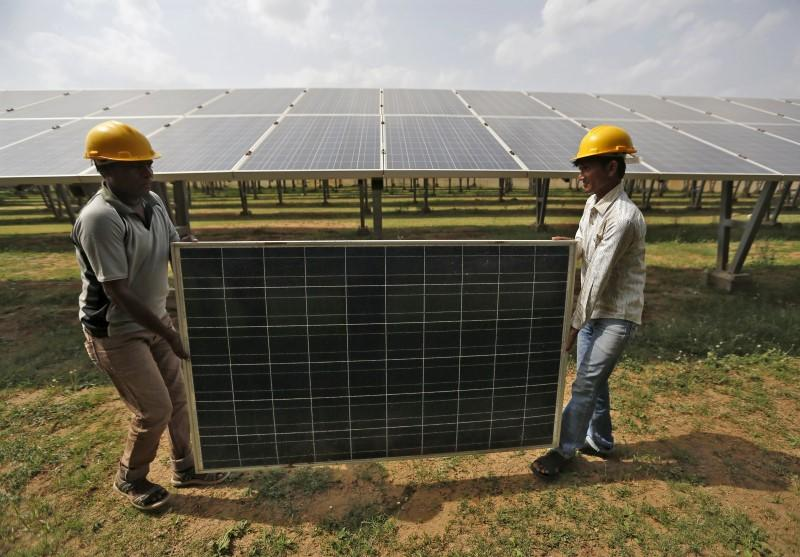

PLACES YOU MUST VIST

kyoto
I have visited kyoto on feb 1st 2018
Kyoto, once the capital of Japan, is a city on the island of Honshu. It's famous for its numerous classical Buddhist temples, as well as gardens, imperial palaces, Shinto shrines and traditional wooden houses. It’s also known for formal traditions such as kaiseki dining, consisting of multiple courses of precise dishes, and geisha, female entertainers often found in the Gion district.
kyoto
I have visited kyoto on feb 1st 2018
Kyoto, once the capital of Japan, is a city on the island of Honshu. It's famous for its numerous classical Buddhist temples, as well as gardens, imperial palaces, Shinto shrines and traditional wooden houses. It’s also known for formal traditions such as kaiseki dining, consisting of multiple courses of precise dishes, and geisha, female entertainers often found in the Gion district.
Review On The Movies

Exellent film to culminate MCU ride
I watched it today with my friends and they loved it. You should have a minimal previous understanding of the story, or you will miss 40% of the fun. You should watch Infinity War, Civil War, Black Panther, Age of Ultron, Ant-Man and the Wasp before watching Avengers: Endgame. The entire movie pays homage to most of the other Marvel superhero movies. You will enjoy it a lot. There is, at the beginning of the movie, a (spoiler alert) head dismemberment that is quite impressive. The movie is based on the most-talked action-packed Sci-fi series. The movie shows how the Avengers assemble once more in order to reverse Thanos' actions and restore balance to the universe. The movie is lengthy, and it does run for 3 hours all worthwhile.
news about the environment
-
Meet the sloth cubs 'learning to be wild again' at this orphanage

Once an orphaned sloth is brought to the facility, the JRC acts quickly to introduce the animal to its new environment. “We’ve invented a whole adaptation system for our sloths,” says García. “Firstly, we put it with other babies of the same age and we take it through a process that we call ‘high school’, where it goes outside, starts climbing trees and uses our playground. “Little by little, it learns to be a sloth.”This process is matched with expert medical care and nutrition - ranging from leaves and twigs, to fresh fruit and vegetables. A low metabolic rate means sloths can survive on relatively little food. It takes days for them to process what other animals can digest in a matter of hours. But without guidance from their mothers, the staff at the JRC work hard to encourage cubs to eat a nutrient-rich diet.“Learning to find their own food is one of the final stages of their education,” adds García. “At this point we leave them on their own the whole time, and they do not have any kind of care. They have to find food by themselves.”This process allows the sloths to reacclimatise to their natural environment. Far removed from the helping hands of their human carers, the cubs spend their days climbing trees and eating leaves from overhanging branches. Only camera traps are present to document their movements. “After this last process, we can see that they are wild and ready to graduate,” says García
-

Budget 2022 Is Bad News for India’s Climate Action India’s perennial air pollution crisis received less attention in this year’s budget. It made no extra commitment on air pollution mitigation strategies and projects like the National Clean Air Programme (NCAP). In fact, the Commission on Air Quality Management for National Capital and Adjoining Areas has been allocated Rs 17 crore as opposed to Rs 20 crore last year. The biggest cut was seen in the Pradhan Mantri Ujjwala Yojana (PMUY) or the LPG subsidy scheme, one of the flagship air pollution mitigation programmes. The budget allocated only Rs 4,000 crore for LPG subsidies as opposed to Rs 12,000 crore last fiscal. The commitments made to clean and sustainable mobility for urban areas is noteworthy. Especially the development of the electric vehicle (EV) ecosystem. However, the budget provides no further details regarding the financial allocation towards this transition. Moreover, given the fossil energy dependent future of most Indian cities, any transition towards EVs will be cosmetic. India’s air pollution woes are rooted in our poor regulatory ecosystem. Nodal agencies like the Central Pollution Control Board (CPCB) are ill funded and understaffed given the enormity of the environmental crisis. The allocation to CPCB has remained flat at Rs.100 crores for the last two budgets. The government of India spent a whopping Rs 713.20 crore on print, electronic and outdoor advertisement in the fiscal year 2019-20.
List of books